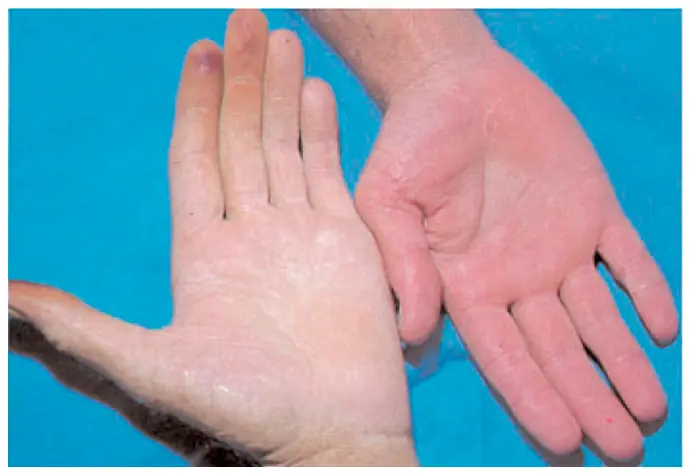

نسخه استخراجشده؛ ترجمه یا تأیید علمی انجام نشده است. وضعیت: captured
خانم ۴۰ سالهای برای جرمگیری آمده و میگوید با مسواک لثهاش خون میآید. از خستگی و تنگی نفس با کمترین فعالیت مینالد و قاعدگی سنگینی دارد. پوست صورتش رنگپریده است. به چه فکر میکنی؟

کمخونی یعنی کم شدن ظرفیت حمل اکسیژن خون؛ معمولاً چون گلبول قرمز یا هموگلوبین (Hb) کم است. کمخونی خودش بیماری نیست؛ نشانهی یک مشکل زمینهای است. سه راه اصلی دارد:
مرز کمخونی: Hb کمتر از ۱۲ g/dL در زن و کمتر از ۱۳٫۵ g/dL در مرد. شایعترین نوع، کمخونی فقر آهن است. کمخونی در مرد معمولاً یعنی یک مشکل زمینهای، مثل خونریزی گوارشی یا بدخیمی.
نقش تو: بیمار مشکوک را برای CBC با دیفرانسیل به پزشک بفرست. کمخونی ممکن است نخستین نشانهی زخم پپتیک یا سرطان باشد و تشخیص زودش جان بیمار را نجات دهد.
در کمخونی پرنیشیوز معده «عامل داخلی» (intrinsic factor) نمیسازد و B12 جذب نمیشود. علتش خودایمنی است و درمانش تزریق B12.
برای درمان روتین، Hb بالای ۱۱ g/dL باشد و بیمار علامتی نداشته باشد. بیماری که تنگی نفس، Hb زیر ۱۱، ضربان غیرطبیعی یا SpO2 زیر ۹۱٪ دارد ناپایدار است؛ درمان انتخابی را تا بهتر شدن حالش عقب بینداز.
در کار تهاجمی روی هر بیمار کمخون، پالساکسیمتر وصل کن. در کمخونی آپلاستیک همهی ردههای خون کماند: پتشی، اکیموز، خونریزی لثه و عفونت را جدی بگیر.
نوع سؤال: ساخت کلمه · 5 خانه
حروف منبع: ل · خ · ا · ی · د